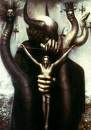

Forums galactiques > Assemblée Galactique : diplomatie officielle > Fuser et la liberté
Pages : 1
| Fuser Andreëvitch Respect diplomatique : 26  01/07 ETU 13:25 | Score : 9 Détails **Fuser Andreëvitch entra en l'assemblée galactique.
C'était la première fois qu'il entrait dans un endroit pareil aussi somptueux avec une telle grandeur. Fuser respira, il sentait la liberté d'expression. Fuser écouta, il entendait d'un côté des mots fleuris et de l'autre des mots écorchés mais auquel on prêtait tout de même extrêmement attention. Fuser était arrivé depuis queques heures en Origine avec son vaisseau avec un drapeau du Che, héros mytique de la liberté en préhistoire. Il s'était installé sur une planète vierge du nom de Come-back. L'activité lui laissait présager une vie humble et active en Origine.*** Peuple d'Origine, je souhaiterais dire quelques mots afin de me présenter. Je me nomme Fuser Andreëvitch. Je descends de deux familles lointaines. Mon père descend de Karl Marx et ma mère descend d'une famille de révolutionnaires ayant combattu au côté du Che. Je suis arrivé, je ne dirais par malheur mais plutôt par bonheur, en Origine suivant un accident lors d'un déplacement intergalaxial. Je me suis installé sur une planète que j'ai baptisé Come-back. Je vous observe depuis quelques heures et il me semble que la liberté d'expression est en pleine activité en ce moment. Après cette courte présentation, je vais parler de mes idées politiques lesquelles, je crois, être les plus importantes. Mon vision de ma vie est la liberté. Elle l'est et le restera. Je ne puis concevoir queque chose sans me dire: cela pourrait-t-il nuire à la liberté? Je n'accepterais aucune forme de gouvernement impérialiste et si cela venait à s'installer, je le combattrais de mon âme et mon corps. Ma vision d'un gouvernement est le socialisme car nous sommes tous frères. Nous devons l'être! Soyons sociables, soyons tolérants! Vous me direz: vous dîtes qu'il faut être tolérant mais vous refusez une forme impériale. Je vous répondrais: la tolérance n'existe pas avec l'impérialisme!! La démocratie est le gouvernement à adopter car le peuple passe avant tout! Voila ma vision des choses. Jai vu aussi qu'il y avait des coalitions. Quelqu'un pourrait m'en indiquer une suivant mes idéaux? Merci d'avoir prêter une oreille mon discours, Fuser Andreëvitch, partisan de la liberté! ***Fuser se rassit et reprit court au débats de l'assemblée.*** | ||
| OWZ Respect diplomatique : 84  01/07 ETU 20:14 | Score : 2 Détails Après la déclaration que venait de faire Fuser Andreëvitch, OWZ qui depuis quelque temps se tenait à l'ombre dans l'Assemblée Galactique se leva puis se plaça à ses côtés. Bien qu'il semblait ne s'adressait qu'à ce nouveau venu, sa voix puissante et calme retentit dans toute la pièce.
"MOn cher ami, je trouve vos paroles délicieuses dans un tel lieu. D'autant plus que de..." Son ton s'alourdit légérement. "de récents agissements et nouvelles sont parvenues à mes oreilles et cela me terrifie. Je fais à appel à tous les défenseurs de la liberté : que tous les militaires de cette galaxis se lèvent, rasemblent leur vaisseaux et s'organisent. Il est de notre devoir de nous préparer à lutter contre une menace certaine." Ces mots jaillirent comme l'eau vive et sa stature toujours engoncée dans son habit exotique pourpre-bleu le mettait en exergue sous l'éclat fébrile de l'astre à travers les fenêtres. Il serra la main de Fuser Andreëvitch et se réinstalla dans l'obscurité... | ||
| Sarke Respect diplomatique : 43  01/07 ETU 22:50 | Score : 3 Détails *Une personne entra. Le bas de son visage blanc etait couvert par une echarpe noire. Il portait un manteau informe, aussi noir que son echarpe et que le tatouage qu'il arborait sur le cote de la tete. Ses yeux etaient comme deux puits sans fond ni lumiere. Bien que la temperature de l'Assemblee soit reglee pour qu'elle ne soit ni trop chaude, ni trop froide, le personnage tremblait. Il se placa a cote des commandants qui venaient de s'exprimer. Ceux-ci ressentirent une aura de froid qui entourait ce singulier personnage et s'ecarterent un peu. L'homme (si c'en etait un)ne s'en preoccupa pas et prit la parole*
L'annonce de cet Empire, de cette dictature m'a fait frissonner, ce qui, en soi, est deja assez exceptionnel. Comment certains commandants peuvent-ils se laisser abuser par les propos demagogiques des nouveaux Napoleon et Ta princesse? on pourrait croire que le peuple d'Origine apprendrait de ses erreurs, mais il n'en est apparemment rien. Ils laissent a nouveau un Empire s'installer, malgre les nombreuses preuves de repression et de massacre que ce systeme a fait. N'etant point grand stratege, je ne peux combattre l'Empire Arcien par les armes mais je suis pret a rassembler ceux qui peuvent et garder ceux-ci dans le bon chemin. Bien qu'une lutte armee soit contre mes principes, les circonstrances ne me laissent pas le choix, et je me declare pret a creer une Armee Anti-Imperiale. Ceux qui, comme moi, n'ont d'autre desir que de combattre les imperialistes, sont invites a me rejoindre, en esperant qu'ils seront meilleurs tacticiens que moi. | ||
| OWZ Respect diplomatique : 84 01/07 ETU 23:01 | Score : 2 Détails OWZ se retourna quand il entendit les propos plus qu'intéressants du commandant Sarke.
"Commandant, votre idée que j'avais esquissée auparant me plaît. Que l'Empire s'assume, et puisque nous ne faisons pas partie dans aucune institutions officielles de celui-ci, nous ne sommes pas en dehors de la "loi" du couple impérial. Que dans ces quelques jours s'élève une armée anti-impériale !! Non pas pour les attaquer sans raisins, mais pour réagir si jamais l'Empire se prend à des hommes qui ne méritent pas la destructions." "IL faut hic et nunc mettre en marche la création d'une armée pour contrôler les abus possibles de l'Empire, pour donner à l'Empire Arcien un début de cohérence !!!" |
Pages : 1
Forums galactiques > Assemblée Galactique : diplomatie officielle > Fuser et la liberté